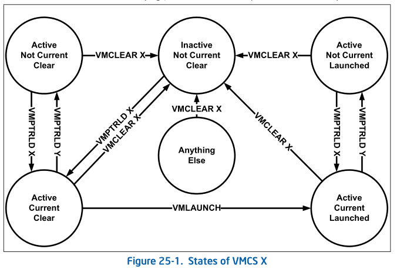
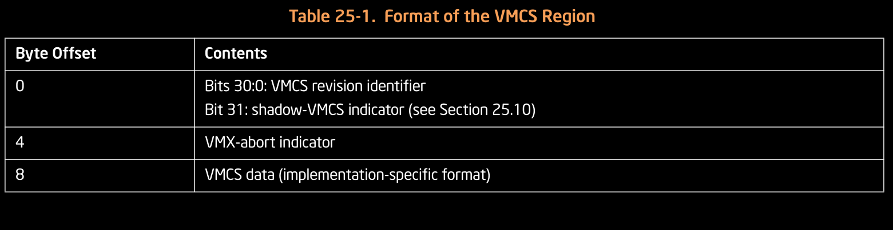

VIRTUAL MACHINE CONTROL STRUCTURES
FROM intel sdm
25.1 OVERVIEW
A logical processor uses virtual-machine control data structures (VMCSs) while it is in VMX operation. These manage transitions into and out of VMX non-root operation (VM entries and VM exits) as well as processor behavior in VMX non-root operation. This structure is manipulated by the new instructions VMCLEAR, VMPTRLD, VMREAD, and VMWRITE.
A VMM can use a different VMCS for each virtual machine that it supports. For a virtual machine with multiple logical processors (virtual processors), the VMM can use a different VMCS for each virtual processor.
A logical processor associates a region in memory with each VMCS. This region is called the VMCS region.1 Soft- ware references a specific VMCS using the 64-bit physical address of the region (a VMCS pointer). VMCS pointers must be aligned on a 4-KByte boundary (bits 11:0 must be zero). These pointers must not set bits beyond the processor’s physical-address width.2,3
A logical processor may maintain a number of VMCSs that are active. The processor may optimize VMX operation by maintaining the state of an active VMCS in memory, on the processor, or both. At any given time, at most one of the active VMCSs is the current VMCS. (This document frequently uses the term “the VMCS” to refer to the current VMCS.) The VMLAUNCH, VMREAD, VMRESUME, and VMWRITE instructions operate only on the current VMCS.
The following items describe how a logical processor determines which VMCSs are active and which is current:
The memory operand of the VMPTRLD instruction is the address of a VMCS. After execution of the instruction, that VMCS is both active and current on the logical processor. Any other VMCS that had been active remains so, but no other VMCS is current.
The VMCS link pointer field in the current VMCS (see Section 25.4.2) is itself the address of a VMCS. If VM entry is performed successfully with the 1-setting of the “VMCS shadowing” VM-execution control, the VMCS referenced by the VMCS link pointer field becomes active on the logical processor. The identity of the current VMCS does not change.
The memory operand of the VMCLEAR instruction is also the address of a VMCS. After execution of the instruction, that VMCS is neither active nor current on the logical processor. If the VMCS had been current on the logical processor, the logical processor no longer has a current VMCS.
The VMPTRST instruction stores the address of the logical processor’s current VMCS into a specified memory loca- tion (it stores the value FFFFFFFF_FFFFFFFFH if there is no current VMCS).
The launch state of a VMCS determines which VM-entry instruction should be used with that VMCS: the VMLAUNCH instruction requires a VMCS whose launch state is “clear”; the VMRESUME instruction requires a VMCS whose launch state is “launched”. A logical processor maintains a VMCS’s launch state in the corresponding VMCS region. The following items describe how a logical processor manages the launch state of a VMCS:
If the launch state of the current VMCS is “clear”, successful execution of the VMLAUNCH instruction changes the launch state to “launched”.
The memory operand of the VMCLEAR instruction is the address of a VMCS. After execution of the instruction, the launch state of that VMCS is “clear”.
There are no other ways to modify the launch state of a VMCS (it cannot be modified using VMWRITE) and there is no direct way to discover it (it cannot be read using VMREAD).
Figure 25-1 illustrates the different states of a VMCS. It uses “X” to refer to the VMCS and “Y” to refer to any other VMCS. Thus: “VMPTRLD X” always makes X current and active; “VMPTRLD Y” always makes X not current (because it makes Y current); VMLAUNCH makes the launch state of X “launched” if X was current and its launch state was “clear”; and VMCLEAR X always makes X inactive and not current and makes its launch state “clear”.
The figure does not illustrate operations that do not modify the VMCS state relative to these parameters (e.g., execution of VMPTRLD X when X is already current). Note that VMCLEAR X makes X “inactive, not current, and clear,” even if X’s current state is not defined (e.g., even if X has not yet been initialized). See Section 25.11.3.

25.2 FORMAT OF THE VMCS REGION
A VMCS region comprises up to 4-KBytes.1 The format of a VMCS region is given in Table 25-1.

The first 4 bytes of the VMCS region contain the VMCS revision identifier at bits 30:0.1 Processors that maintain VMCS data in different formats (see below) use different VMCS revision identifiers. These identifiers enable soft- ware to avoid using a VMCS region formatted for one processor on a processor that uses a different format.2 Bit 31 of this 4-byte region indicates whether the VMCS is a shadow VMCS (see Section 25.10).
Software should write the VMCS revision identifier to the VMCS region before using that region for a VMCS. The VMCS revision identifier is never written by the processor; VMPTRLD fails if its operand references a VMCS region whose VMCS revision identifier differs from that used by the processor. (VMPTRLD also fails if the shadow-VMCS indicator is 1 and the processor does not support the 1-setting of the “VMCS shadowing” VM-execution control; see Section 25.6.2) Software can discover the VMCS revision identifier that a processor uses by reading the VMX capa- bility MSR IA32_VMX_BASIC (see Appendix A.1).
Software should clear or set the shadow-VMCS indicator depending on whether the VMCS is to be an ordinary VMCS or a shadow VMCS (see Section 25.10). VMPTRLD fails if the shadow-VMCS indicator is set and the processor does not support the 1-setting of the “VMCS shadowing” VM-execution control. Software can discover support for this setting by reading the VMX capability MSR IA32_VMX_PROCBASED_CTLS2 (see Appendix A.3.3).
The next 4 bytes of the VMCS region are used for the VMX-abort indicator. The contents of these bits do not control processor operation in any way. A logical processor writes a non-zero value into these bits if a VMX abort occurs (see Section 28.7). Software may also write into this field.
The remainder of the VMCS region is used for VMCS data (those parts of the VMCS that control VMX non-root operation and the VMX transitions). The format of these data is implementation-specific. VMCS data are discussed in Section 25.3 through Section 25.9. To ensure proper behavior in VMX operation, software should maintain the VMCS region and related structures (enumerated in Section 25.11.4) in writeback cacheable memory. Future implementations may allow or require a different memory type3. Software should consult the VMX capability MSR IA32_VMX_BASIC (see Appendix A.1).